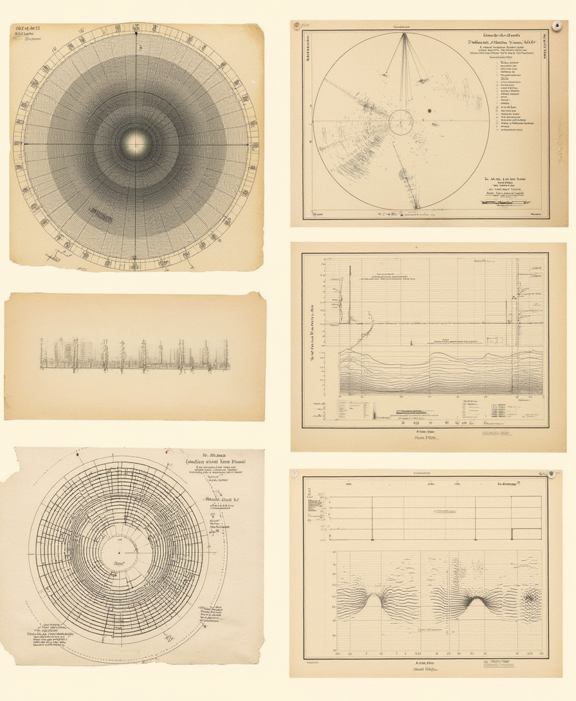
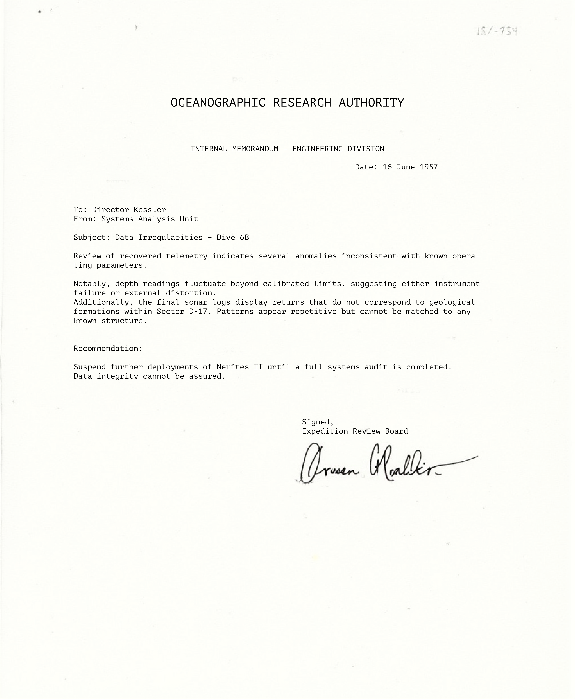
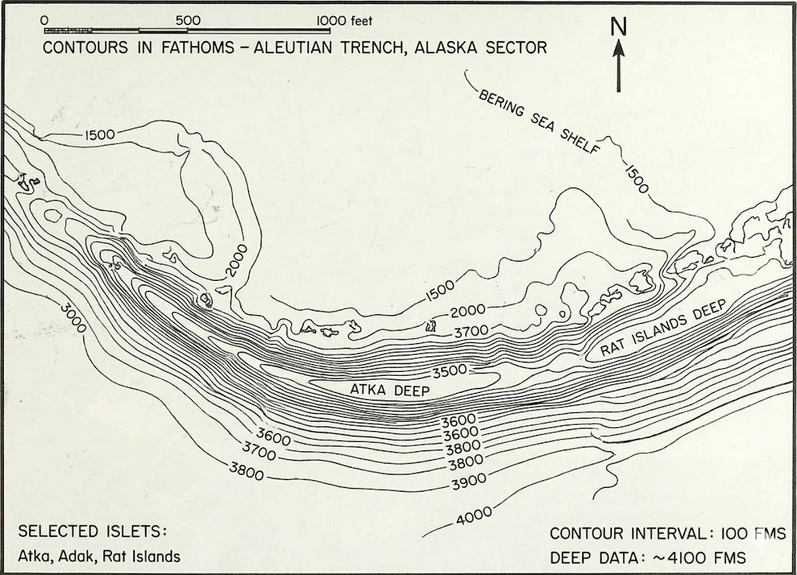

OCEANOGRAPHIC RESEARCH AUTHORITY / RECONSTRUCTED ARCHIVE
ABOUT THIS ARCHIVE
The materials contained within this archive were originally produced by the Oceanographic Research Authority as part of routine deep-sector operations, technical observation programs, and internal review procedures conducted throughout the early 1950s. At the time of their creation, these documents were intended for controlled internal circulation only. They were not prepared as a public report, nor do they appear to have been assembled for external release.
The surviving materials belonging to this archive suggest that the mission formed part of a wider sequence of deep-water operations carried out across multiple sites. References appear throughout the collection to earlier ORA dives conducted in the Strait of Florida, Monterey Submarine Canyon off the coast of California, and the Aleutian Trench near Alaska. These operations were described in official summaries as standard scientific surveys, equipment trials, and communications tests.

Over time, however, the documentation begins to show a recurring pattern. Records from geographically separate missions refer to signal degradation, unexplained acoustic interference, inconsistent depth telemetry, delayed transmission returns, and temporary loss of contact between surface stations and submerged equipment. In most cases, these events were attributed to local conditions, mechanical instability, operator error, or environmental interference. Later internal notes suggest that these explanations were not always considered sufficient.
Following the events associated with Dive D-17/6B, access to select records was revised under updated clearance directives. Portions of the associated investigation were formally concluded without comprehensive public release, and several documents referenced in early review materials do not appear in current official indexes.
The archive therefore represents neither a complete operational file nor an authorized historical account. Instead, it should be understood as a consolidated reconstruction: an attempt to preserve continuity across scattered records, missing files, technical fragments, and administrative summaries whose original relationships had been obscured, separated, or reduced within the formal record.
Over time, however, the documentation begins to show a recurring pattern. Records from geographically separate missions refer to signal degradation, unexplained acoustic interference, inconsistent depth telemetry, delayed transmission returns, and temporary loss of contact between surface stations and submerged equipment. In most cases, these events were attributed to local conditions, mechanical instability, operator error, or environmental interference. Later internal notes suggest that these explanations were not always considered sufficient.
Following the events associated with Dive D-17/6B, access to select records was revised under updated clearance directives. Portions of the associated investigation were formally concluded without comprehensive public release, and several documents referenced in early review materials do not appear in current official indexes.

The archive therefore represents neither a complete operational file nor an authorized historical account. Instead, it should be understood as a consolidated reconstruction: an attempt to preserve continuity across scattered records, missing files, technical fragments, and administrative summaries whose original relationships had been obscured, separated, or reduced within the formal record.
Later operations in Monterey Submarine Canyon appear to have expanded the scope of ORA’s testing. The canyon’s depth, steep walls, and complex acoustic environment made it suitable for extended communications trials. Surviving logs describe repeated attempts to maintain contact with submerged instruments positioned along the canyon wall. Several of these attempts were interrupted by total but brief connection loss. In official summaries, the interruptions were described as temporary transmission failure. In review notes, the same events are marked with more cautious language.
The Aleutian Trench materials are more incomplete. The surviving excerpts reference severe pressure conditions, irregular current movement, and repeated failure of depth-linked transmission equipment. One technical note refers to a signal return logged after the associated instrument package had already been marked inactive. No complete explanation for this discrepancy is preserved in the available record.
PRIOR DEEP-SECTOR OPERATIONS
ORA’s early deep-sector program appears to have been structured around a sequence of geographically distinct operations. Each location offered different environmental conditions and technical challenges. The Strait of Florida provided a relatively controlled testing ground for early descent and communication procedures. Monterey Submarine Canyon allowed for deeper observation in a complex acoustic environment. The Aleutian Trench introduced extreme pressure conditions, greater remoteness, and more severe limitations on recovery and surface support.
Officially, these missions were not grouped as a single investigation. Records identify them as separate surveys, each with its own operational purpose, personnel assignment, and technical objectives. However, the archive places them in proximity because of repeated similarities in the surviving documentation. Across all three sites, communications logs describe signal drift, unexpected silence, delayed returns, and instances in which surface stations received partial data after the original connection had been marked lost.
In the Strait of Florida records, these problems appear as minor irregularities.
In the Monterey records, they become more frequent and more carefully described.
By the time of the Aleutian operations, the language becomes increasingly restricted. Technical explanations are shortened. Distribution lists narrow. Several reports refer to appendices or supplemental readings that are not included in the surviving file sequence.
This gradual change in language is one of the archive’s more significant features. The documents do not openly state that ORA was concealing information. Instead, they show a slow administrative movement away from description and toward containment.

COMMUNICATIONS IRREGULARITIES
The loss of connection between submerged units and surface stations is one of the most consistent elements preserved across the archive. In some cases, interruptions lasted only seconds. In others, the record indicates longer periods of silence, followed by incomplete telemetry or voice fragments that could not be matched to the expected transmission sequence.
ORA technical summaries generally attribute these failures to pressure effects, cable strain, hydrophone misalignment, temperature layering, or mineral interference along the seabed. These explanations are plausible within the context of deep-water operations. However, the repeated appearance of similar failures across different environments appears to have prompted additional internal review.
Several recovered logs note transmission returns occurring after operators had already marked the line inactive. Others describe duplicated signal packets, delayed voice contact, and telemetry readings that disagreed between onboard instruments and surface monitoring stations.
These irregularities are not presented in the archive as proof of a single cause. Rather, they form a technical background against which Dive D-17/6B was later reviewed. The significance of D-17/6B lies partly in the fact that several previously separate irregularities appear to have occurred within one operation.
DIVE D-17/6B
Dive D-17/6B is identified throughout the archive as a deep-sector operation conducted under ORA authority; the surviving record suggests that the dive was not presented internally as an extraordinary mission. Its stated purpose was to verify equipment performance, document environmental conditions, and maintain continuous communication through a controlled descent sequence.
The early documentation for D-17/6B is procedural and unremarkable. Pre-dive checks list ballast verification, pressure-hull inspection, communications calibration, oxygen regulation, cable tension review, and external sensor testing. Initial descent logs indicate stable conditions. Depth readings and acoustic contact were recorded within acceptable limits during the first phase of the operation.
The first irregularities appear in the communications record. Contact with the dive unit became intermittent before being restored without a clear technical explanation. Several transmissions are marked as delayed, duplicated, or received outside their expected order. Surface operators requested depth confirmation multiple times despite the presence of automated telemetry. Later review notes refer to discrepancies between reported position, pressure readings, and passive acoustic tracking.
As the dive continued, the record becomes increasingly incomplete. Connection losses became more frequent. Instrument readings appear to have diverged between surface monitoring stations and onboard systems. A recovered systems note indicates that the primary connection was lost, followed by the secondary line, followed by what is described only as a partial return. The full content of this return is not preserved in the archive.
The formal mission summary does not reproduce the full sequence of communication failures. Instead, it refers to “unstable transmission conditions” and “incomplete recovery of signal integrity.” These terms appear again in later administrative correspondence, though without the supporting technical logs that would normally accompany such conclusions.
What distinguishes D-17/6B from earlier operations is not the presence of one unexplained event, but the convergence of several patterns already documented elsewhere: signal failure, delayed transmission return, telemetry disagreement, pressure-related uncertainty, and subsequent restriction of the record.
INTERNAL REVIEW AND RESTRICTION
Following the events associated with Dive D-17/6B, ORA review procedures appear to have changed. Access to select records was restricted under revised clearance directives, and materials related to communications failure, environmental anomaly, and post-dive recovery were separated from the standard mission file. The formal investigation was eventually marked closed, but surviving references suggest that internal discussion continued after the official conclusion.
The archive does not contain a single document stating that records were intentionally concealed. Instead, the evidence appears through administrative absence. Files are referenced but not included. Logs are summarized without attachments. Review language points to technical materials that are no longer present. Index numbers appear without corresponding entries.
Earlier operations were treated in a similar but less severe manner. Irregularities from the Strait of Florida were explained as equipment behavior. Monterey connection losses were reduced to transmission instability. Aleutian discrepancies were retained only in fragments. After D-17/6B, this pattern appears to have become more formalized.
The result is a record that remains technically intact in places, but contextually incomplete. The archive preserves enough material to suggest continuity, but not enough to establish a final official account.
COMPILATION AND STRUCTURE
The present archive is believed to have been assembled by an individual formerly affiliated with the Oceanographic Research Authority. No authorship is formally attributed. Based on the structure of the collection, the cross-referencing of records, and the inclusion of materials from separate administrative systems, the compiler likely possessed working knowledge of ORA archival procedures and access to restricted or legacy storage environments.
The archive does not conform to any single recognized ORA classification standard. It does not follow a strictly chronological sequence, nor does it reproduce a standard departmental index. Instead, it arranges materials according to operational relationship: mission to mission, anomaly to anomaly, reference to omission.
This structure appears deliberate. Records from the Strait of Florida, Monterey Submarine Canyon, and the Aleutian Trench are not included as background decoration, but as evidence of repeated procedural concern. Their placement before and around D-17/6B allows the later mission to be read not as an isolated failure, but as the point at which several unresolved patterns converged.
The archive’s completeness is therefore uneven but meaningful. It preserves not only what was recorded, but also the shape of what was separated, summarized, or removed.
ACCESS AND LIMITATIONS
The contents of this archive should not be considered a complete or officially verified account of Dive D-17/6B or the wider ORA deep-sector program. Portions of the original documentation referenced within these materials are not present, and no access to current ORA internal systems has been established to confirm the status of those records.
Inconsistencies in formatting, terminology, and classification may reflect differences in source origin rather than later alteration. Where possible, materials appear to have been preserved in their recovered state. Redactions, omissions, interrupted sequences, and contradictory technical readings remain part of the archive rather than being corrected or normalized.
Users should approach the archive as an incomplete institutional record. Individual documents may appear routine when viewed alone. Their significance often emerges only through comparison with surrounding materials, repeated terminology, missing attachments, or references to records no longer present.
PRESERVATION STATEMENT
No formal statement of intent accompanies this archive. No signed memorandum, release notice, or explanatory preface has been recovered. However, the scope of the materials and the care taken in their arrangement suggest an effort to preserve a more complete account than was available through standard ORA channels.
The archive does not present itself as accusation or testimony.
As such, the contents should be understood not as an official ORA record, but as an independent reconstruction derived from materials no longer fully represented within the Authority’s active archives.
NOTICE
FILE STATUS / UNRECOGNIZED COMPILATION
This archive is not listed as an official publication of the Oceanographic Research Authority. No authorization record for its assembly has been identified. No public release notice has been located.
The collection appears to derive from internal materials associated with multiple ORA deep-sector operations, including but not limited to Dive D-17/6B. Its contents should not be interpreted as complete, final, or officially verified.